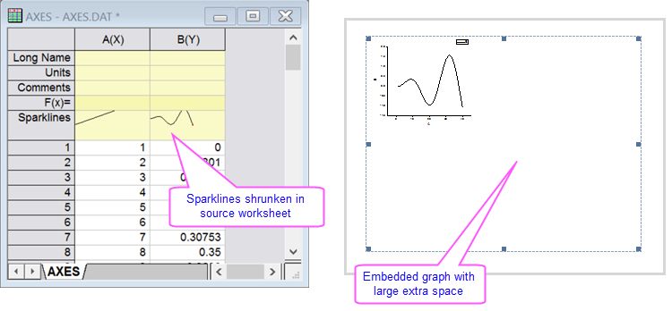

FAQ-861 Warum sind meine Diagramme abgeschnitten, geschrumpft oder erhalten eine zusätzliche weiße Fläche, wenn sie in Word oder PowerPoint kopiert oder als EMF, PDF bzw. EPS exportiert werden?
Graph-with-LargeMargin
Letztes Update: 25.05.2017
Wenn Sie Origin auf einem Windows PC (meistens Win10-Laptop) mit mehreren Monitoren verwenden, kann es sein, dass Diagramme, die Sie in Word oder Powerpoint kopiert haben, oder Diagramme, die Sie als EMF-, PDF- oder EPS-Dateien exportiert haben, abgeschnitten (z. B. wird nur das obere linke Viertel des Diagramms gezeigt) bzw. geschrumpft sind oder ein Übermaß an weißer Fläche zeigen. Es kann außerdem passieren, dass die Sparklines nicht korrekt gerendert werden.

Der Fehler tritt nur bei einigen PCs aus. Noch haben wir keine Lösung dafür. Eine oder mehrere der folgenden Lösungen könnte jedoch in Ihrem Fall hilfreich sein:
-
Vorschlag 1:
- Melden Sie sich von Windows ab und wieder an oder starten Sie den PC neu. Dies kann notwendig sein, weil die DPI-Anzeige auf einem oder beiden Monitoren modifiziert wurde. Die An- und Abmeldung ist erforderlich, damit die Änderung in Windows vollständig übernommen wird.
Sollte diese Maßnahme das Problem nicht lösen, versuchen Sie bitte eine der folgenden Optionen:
-
Vorschlag 2:
- Verschieben Sie sowohl Origin als auch die Anwendung, in die Sie Ihr Diagramm einfügen möchten (z.B. Word oder Powerpoint), in Ihren Hauptmonitor und starten Sie beide Anwendungen neu oder schalten Sie die sekundären Monitor(e) aus, melden Sie sich bei Windows ab und wieder an und verwenden Sie nur den Hauptmonitor (z. B. den Bildschirm des Laptops), während Sie in Word oder Powerpoint kopieren.
-
Vorschlag 3:
- Öffnen Sie die Seite Anzeige von Windows und setzen Sie die DPI auf 100%. Wenn Sie zwei Monitore verwenden, setzen Sie bitte beide auf 100% DPI. Melden Sie sich von Windows ab und wieder an (dies ist wichtig).
-
Vorschlag 4:
- Wenn Sie Origin über eine Remote-Desktop ausführen, fahren Sie das Windows des Remote-Desktops herunter, gehen Sie zu dem fernen PC und starten Sie ihn neu (melden Sie sich jedoch nicht an, führen Sie Origin direkt auf dem PC an). Gehen Sie dann zu dem PC, auf dem Sie tatsächlich arbeiten, melden Sie sich am Remote-Desktop an und öffnen Sie Origin von dort.
Schlüsselwörter:Seite kopieren, Seite einfügen, obere linkes Viertel, abgeschnitten, zusätzliche Fläche, großer Rand, Problem exportieen, Word, PowerPoint, Win 10, emf